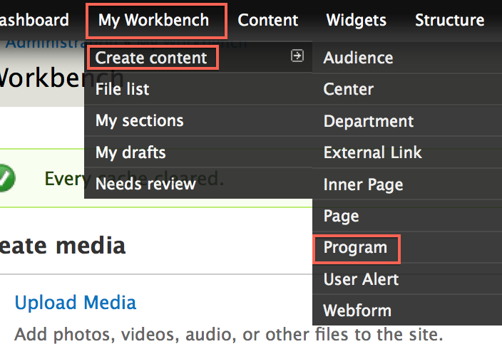
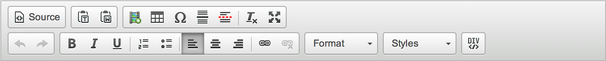
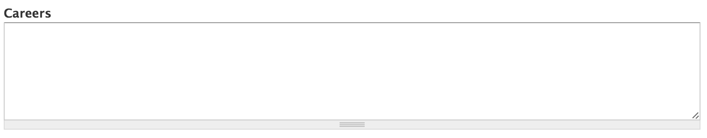
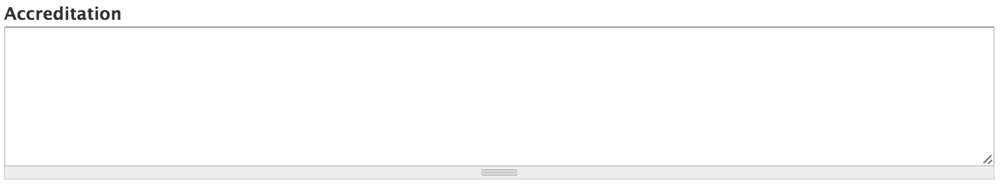
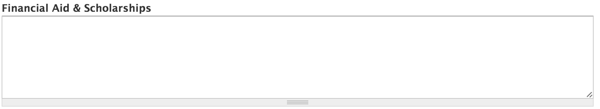
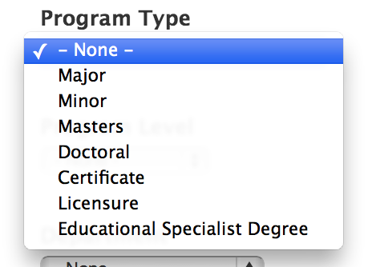
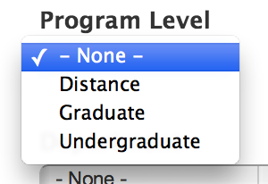

Programs are a content type that represent the programs/majors inside your college.
In the Administration Menu, navigate to:
My Workbench > Create content > Program

Add a new or existing Banner Slide.

Enter the Program Name for this program.

Enter the Shortened Program Name for this program.
This short name will be used in the program's url and other areas around the site.
An example of a shortened name for the Graphic Design Concentration would be Graphic Design

Enter the Description of this page. This is the main copy of your program.

Using the editor toolbar, you can add images or format your copy.

Using this field allows you to link to an external/internal page that holds information about a course that is required for this program.

Using this field allows you to link to an external/internal page that holds information about fees that are required for this program.

Using this field allows you to enter careers associated with this program.

Using this field allows you to enter accreditations associated with this program.

Using this field allows you to enter financial aid and scholarship information associated with this program.

Using this field allows you to enter further information associated with this program.

Select the Program Type of this program/major.

Select the Program Level of this program/major.

Select the Department of this program/major. The Departments listed in this drop-down will be automatically updated with departments that have been created for your college. See Departments for more info on creating Departments.

Choose a Menu link title which will be the name of the menu item displayed.

More detail on the remaining items in this section can be found in the Menu settings documentation.
While viewing the program, click the New draft tab located at the top of the page.

Updating a program is very similar to Creating a program. Make the changes you want and then click the Save button located at the bottom of the form.

While viewing the program, click the New draft tab located at the top of the page.
At the bottom of the New draft form, click Delete.

Confirm the deletion by clicking the Delete button.

On the program you want to change the layout for, click the Change this layout button located at the bottom of the page.

Select the layout you would like for this program.

Move content around and once you are satisfied, click Save.

On the program you want to customize, click the Customize this page button located at the bottom of the page.

Make the changes that you want.
For a more detailed tutorial, please read Customizing Pages
Once you are satisfied with the changes, click Save.

Created on January 7, 2014
Last modified on January 9, 2014
Authored by Gray Sadler